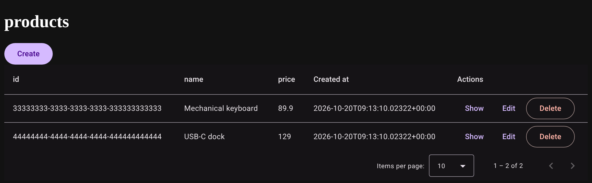

Build Angular admin applications faster.
An open-source, headless framework for Angular admin panels, dashboards and internal tools. Describe a table once and get the list, the forms and the CRUD pages.
Version 0.1.0 · MIT licensed · Angular 22.1+ (22.x) · pre-1.0
See it working

A products table from Supabase, rendered by ResourceTable of @pidrang/material. The same demo exists with the Tailwind layer.
Get started
-
Install
In an Angular 22.1+ standalone app:
npm install @pidrang/core @pidrang/supabase @pidrang/material @supabase/supabase-js ng add @angular/material -
Generate
From the root of the app, connect to your Supabase project and pick your tables. The CLI writes
resources.tsand the List, Create, Show and Edit pages, without overwriting a file.npx pidrang init -
Wire
Paste what the CLI prints:
...resourceRoutesin your routes,provideRouter(routes, withComponentInputBinding())andprovidePidrangin your app config. Then runng serve.
Every table needs an id primary key. Read the full guide